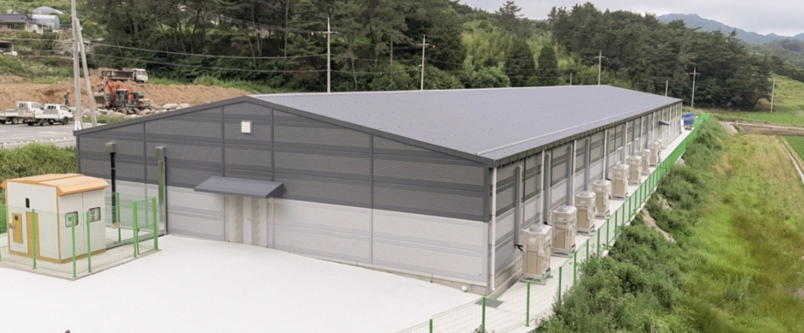

연구를 가능하게 하는
실제 생산 기반.
영글어농장은 원물 재배, 버섯 배양, 식품 가공과 선별·물류를 연결합니다. 시설은 연구와 제품 개발을 뒷받침하는 운영의 기반입니다.
농장·스마트팜
재배의 기반유리온실과 노지에서 블루베리·복숭아를 재배합니다.
HACCP 가공공장
518㎡동결건조, 초미립 분쇄, 액상 농축 설비를 갖추고 있습니다.
버섯 재배 시설
1,504㎡약용버섯 생산과 균사체 고체발효를 위한 기반입니다.
선별·물류센터
986㎡과실 선별과 중부권 유통·배송을 연결합니다.

원물 생산의 경험을 축적합니다.
화순과 이천의 농장에서 블루베리·복숭아를 재배합니다. 유리온실과 노지 재배를 통해 작물과 생산 환경에 대한 경험을 쌓습니다.
재배 현장 살펴보기
배양에서 소재 연구로.
1,504㎡ 규모의 버섯 재배 시설은 약용버섯 생산과 균사체 배양의 기반입니다. 현미 기반 고체발효 기술을 연구와 식품 개발에 연결합니다.
기업부설 연구소와 생산 시설의 경험이 성분 분석, 공정 검토와 소재 개발로 이어집니다.
배양과 연구 살펴보기
원료 특성에 맞춰
가공 방법을 연결합니다.
518㎡ 가공공장에 동결건조기, 초미립 분쇄기와 액상 농축 설비를 갖추고 있습니다.
동결건조
과일과 버섯 원료의 수분을 제거해 건조 원료와 식품으로 활용합니다.
초미립 분쇄
가공 원료를 분말화해 식품 소재와 제품 개발에 활용합니다.
액상 농축
추출·농축 공정을 통해 진액과 액상형 식품 개발로 연결합니다.

생산에서 공급까지 이어갑니다.
986㎡ 규모의 물류센터에서 과실 선별과 출고를 지원합니다. 재배·가공한 원료와 제품이 유통 채널에 도달하도록 연결합니다.
생산 현장의 경험이
다음 개발의 기반이 됩니다.
재배·배양에서 가공·제품화·유통까지 이어지는 운영을 통해 원료와 공정을 함께 이해합니다.
직접 기르는 원물
블루베리·복숭아 재배와 버섯 생산 경험을 축적합니다.
배양과 가공
현미 기반 균사체 배양, 동결건조·분쇄·농축 역량을 연결합니다.
유효성분의 발견
버섯 유래 성분을 분석하고 원료의 특성을 살핍니다.
식품 소재화
원료 규격과 가공 조건을 검토해 식품으로 활용할 방법을 개발합니다.